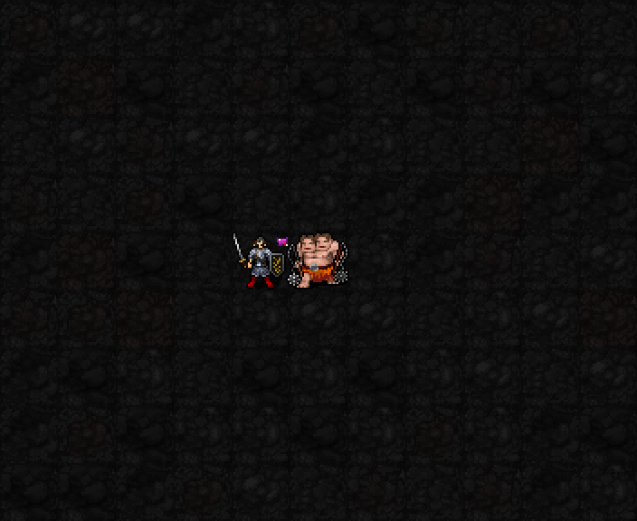
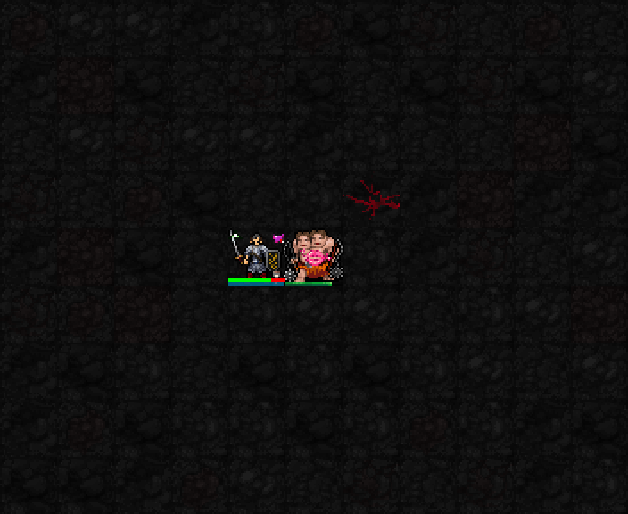
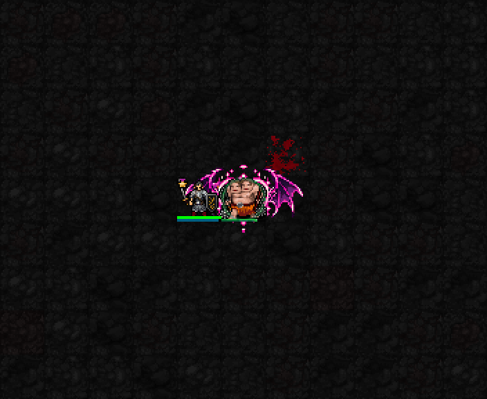
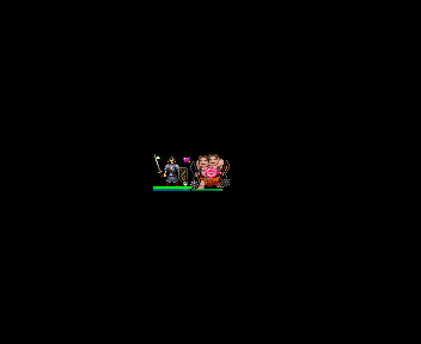
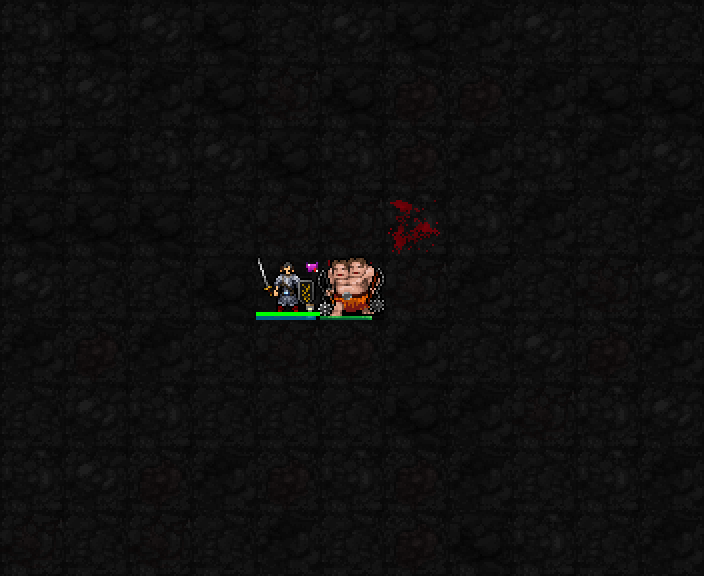
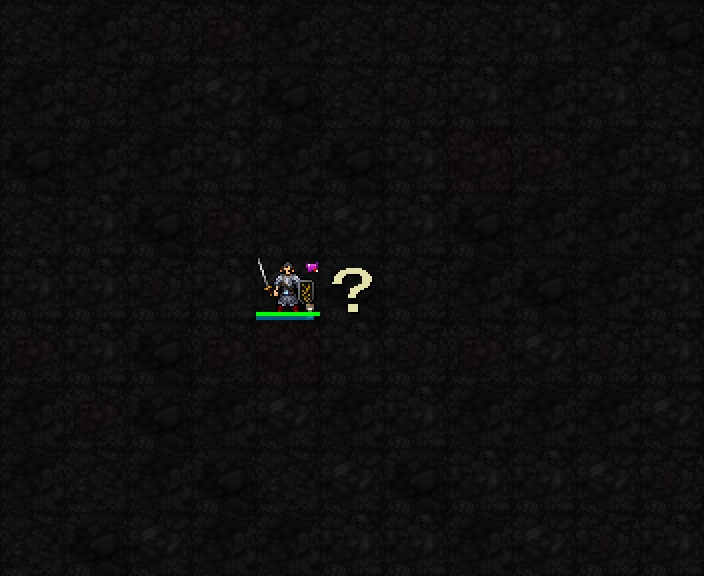

실제 SDL 게임 화면을 확대해 느리게 반복했습니다. 화면에 이펙트를 덧그리지 않았습니다. 높은 자원·고정 장비의 테스트 전투장이며 일반 던전 플레이 영상은 아닙니다. 피해·회복·매혹 확률·비용·지속시간은 유지했습니다.
유혹 표식을 걸고 실제 직접 공격으로 중첩이 늘어납니다. 대상 머리 위 하트가 1→5중첩에 따라 커집니다. 캐릭터 몸체를 가리지 않게 머리 위에 두고, 다른 캐릭터와 겹치면 캐릭터가 위에 그려집니다. 중첩을 소비하거나 표식이 만료되면 사라집니다.

인접 적의 유혹을 소비해 피해를 주고 실제 회복량에 따라 HP를 회복합니다. 대상에 입맞춤 → 작은 하트가 시전자에게 이동합니다. 귀환 하트는 실제 HP가 회복된 경우에만 나옵니다.

매혹을 시도하면 박쥐 날개가 펼쳐지고, 실제 아군화에 성공하면 대상 머리 위 날개 하트 문양이 남습니다. 만료하면 사라집니다. 시전 연출과 매혹 성공 표시는 구분합니다.

HP가 가득 찬 상태에서는 입맞춤만 표시하고 회복 입자는 만들지 않습니다.

다음 두 장면은 매혹 실패와 정신 면역 대상입니다. 성공 문양이 남지 않습니다. 면역 대조는 검사 목적의 유혹3중첩 사전 설정을 사용했습니다.

